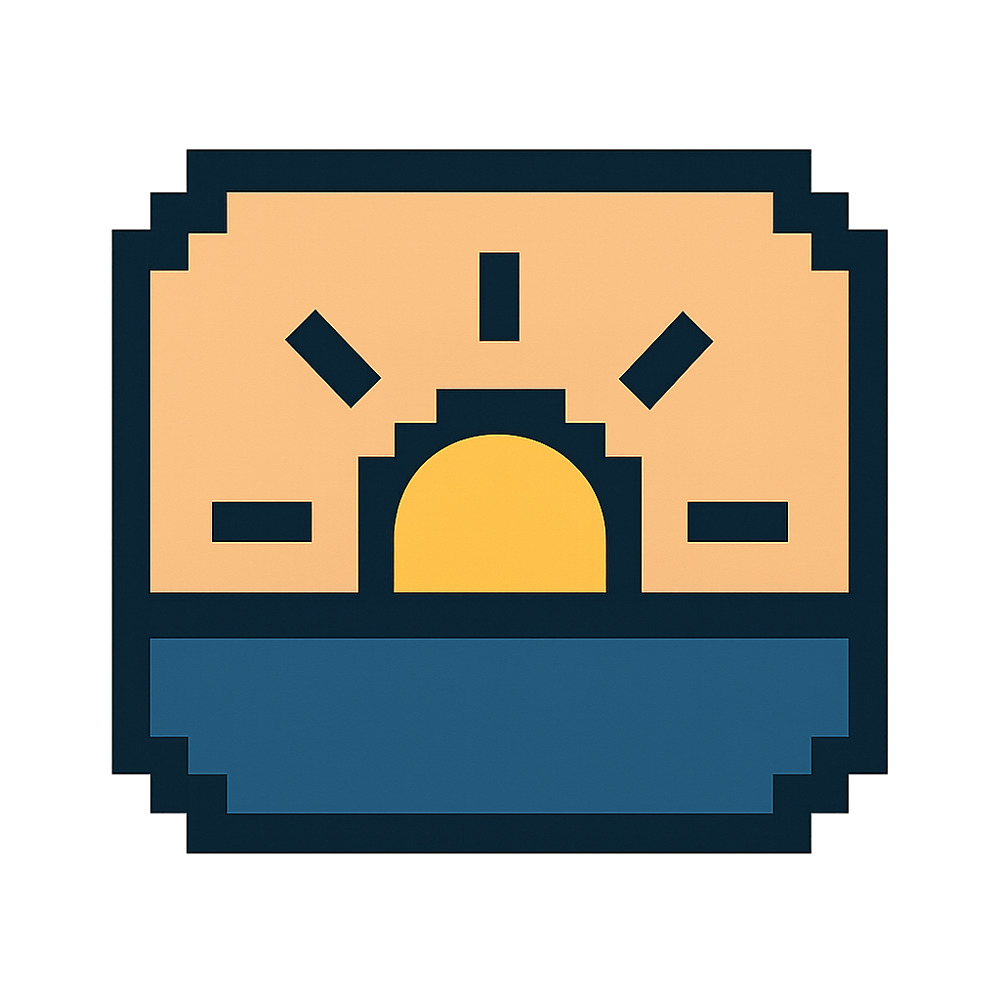

Morning light
Step outside within 30 minutes of waking. Morning light sets your body clock and makes sleep easier later.
Student sleep
Keep roughly the same sleep times, get morning light, cut bright screens at night, and make your room calmer. Tiny steps add up fast.
Why sleep matters
Students who keep simple light and sleep habits think clearer, get sick less, and feel calmer. Here’s the science plus quick moves you can try tonight.
Morning light anchors circadian rhythm; dim light at night lets melatonin rise.
Consistent bed/wake times train your body to expect rest, lowering arousal.
Cool, dark, quiet spaces reduce night awakenings and support deep sleep.
Habit stack
Quick actions that fit student life. Short text, clear icons.
Step outside within 30 minutes of waking. Morning light sets your body clock and makes sleep easier later.
Dim screens an hour before bed. Blue light keeps your brain in “daytime.” Warm light tells it to slow down.
Swap late scrolling for a screen-free cue: stretch, read, or jot notes to chill out.
Cool the room, dim lights, silence alerts. A calm space helps you fall asleep and stay asleep.
Morning reset
This real morning photo is your reminder: step into soft light to set your clock.
Sleep curve
Time on x-axis; lines for light, melatonin, and alertness. Good habits drop alertness while melatonin climbs.
Light drops before bed; melatonin rises; arousal declines. Simple habits shape the curves.
Progress & visuals
Progress bars and columns show how close you are to healthy targets.
Sleep calculator
Enter your sleep time, wake time, and nightly screen hours. We’ll score it, spot screen overlap, and give matching tips.
We’ll total your sleep hours and check how close screens are to bedtime.
Common patterns
The calculator pulls from these so the tips feel personal, not generic.
"Looks like you’re around 6 hours and ~3 hours of screens. That’s short and screen-heavy. Blue light pushes melatonin back, so cap screens to 1 hour before bed (night mode helps) and add ~30 minutes of sleep a night. Small gains add up fast."
"Nice work! You’re getting ~8–9 hours with about an hour of screens. Keep that last hour dim or on night mode. Swap the phone for a book or music a few nights and see if you feel even fresher."
"You’re around 7 hours. Not bad, but shy of 8–10 hours. And ~2 hours of screens can keep your brain wired. Set steadier bed/wake times, cut screens in the last hour, and swap some scrolling for a warm shower or reading. That extra hour will help."
"Your sleep swings a lot—4 hours one night, 9 the next. That confuses your body clock. Aim for a target bed and wake time within ~30 minutes. Protect those hours like an appointment; you’ll feel steadier and less wiped out."
Ambient support
Auto-plays on load; if blocked, it starts on your first tap. Toggle anytime.
Sound is a self-made snoring loop my classmate recorded for me.
Video
Local clip about common sleep myths and, if nothing else works, using CBT-I (cognitive behavioral therapy for insomnia) as the steady, science-backed fix.
Science snapshots
CDC, Harvard Health, Mayo Clinic, NSF, and Cleveland Clinic inform these habits.
Insufficient sleep links to lower focus and higher illness risk.
Blue light at night suppresses melatonin and shifts circadian timing.
Routine bed/wake times and screen limits make sleep more reliable.
Morning daylight and dimmer evening light reinforce a healthy rhythm.
Sleep hygiene includes cool, dark rooms and calming pre-bed rituals.
GPT Sleep Consultant
Tone: warm, non-judgy, science-backed. Covers sleep habits, circadian rhythm, melatonin, morning grogginess, and night routines.
Hello! I'm your personal AI Sleep Consultant, here to help you build healthier sleep habits. I'm trained in sleep science and friendly conversation, so you can ask me anything about your sleep routine or issues. I'll give you personalized tips grounded in scientific concepts like sleep hygiene, circadian rhythms, and melatonin - the hormone that makes you sleepy at night. Whether you're wondering how blue light from screens affects your sleep or need a calming nighttime routine, I'm here to guide you. Think of me as a virtual sleep coach. I can remind you why consistent bedtimes matter, how late-night screen time suppresses melatonin (tricking your brain into thinking it's daytime), and suggest small changes - like a warm decaf drink or dimming lights - to help you wind down. I'll ask a few questions about your schedule and habits, then tailor advice to you. Want to know how to feel less groggy in the morning, or how to stop tossing and turning at 2 AM? Just ask! I'll use proven methods (from relaxation techniques to managing naps) to craft a plan. Even though I'm not a human doctor, I come loaded with up-to-date knowledge from sources like the CDC, sleep foundations, and medical experts. I stay polite, non-judgmental, and totally confidential. I might occasionally share a fun fact or study - for example, how using a phone at 11 PM can push your biological clock later by hours. My goal is to listen to your concerns and then offer practical steps. Together, we can experiment with adjustments until you wake up feeling refreshed. Think of me as part science geek, part big sibling - always here to help you sleep better!
Quick tips
Fast, science-backed moves you can use tonight or tomorrow morning.
Melatonin gummies
Melatonin nudges your body clock; it’s not a knockout pill. Pair it with good habits.
Start low (0.5-1 mg), typical effective 1-3 mg about 30-60 minutes before bed. Megadoses can cause grogginess and may shift your rhythm the wrong way.
Take it before target bedtime, not at 3 AM. Once taken, avoid bright screens or stimulating tasks that override the signal.
Look for third-party testing (USP/NSF). Some gummies mislabel doses or mix in unexpected ingredients; avoid proprietary blends.
Do not rely on melatonin while ignoring basics (late caffeine, bright lights). Use short-term to shift schedule, then reassess.
If you have medical conditions or take other meds, ask a clinician. Teens often make enough melatonin naturally; try lifestyle fixes first.
Melatonin is a nudge to your internal clock. The heavy lifting comes from consistent schedules, dim nights, and bright mornings.
Famous figures
Reality check: they differ, but most people still need ~8 hours.
Used to pull all-nighters; now aims for 7-8 hours to stay sharp and creative, calling it crucial for performance.
businessinsider.com · sleepandattentiondisorders.comReportedly sleeps about 4 hours, up at 4:00 AM daily to exercise and work. Extreme schedule not recommended for most people.
news.futunn.com · worldcrunch.comKnown as a model worker; often leaves office at 1-2 AM and starts by 8:30 AM, sometimes sleeping as little as 3 hours on trips. Advises young founders not to neglect sleep.
sohu.com · huanqiu.comReferences (MLA)
Artist Statement
This project grew out of my own messed-up sleep during the holidays. After Thanksgiving and Christmas, I stayed up late gaming, slept at random times, and basically lost track of any routine. One night I slept after playing for four days straight and didn’t wake up until 4 PM. Then I stayed up again until 2 AM. It totally ruined my circadian rhythm.
Since my roommate and I had opposite sleep schedules, I was still awake while he was already sleeping. I actually recorded his snoring and turned it into part of the sound design. I also added an ASMR track I personally use to fall asleep faster.
I designed the pixel-style icons myself because I love that aesthetic—clean, direct, and a bit playful. The flashing “SLEEP” characters and soft glowing tags are meant to act like visual cues or gentle nudges—they help set the mood, kind of like a psychological signal that says "time to sleep."
There’s also a sleep calculator I built: users enter their bedtime, wake-up time, and screen usage. Then the site automatically evaluates their sleep quality and gives tailored advice based on patterns—like short sleep, heavy screen time, or irregular hours. If nothing works, I included a GPT-based sleep consultant prompt so students can chat with AI and talk through their personal situations. And if it’s still really bad, the site gently introduces CBT-I (Cognitive Behavioral Therapy for Insomnia) as the most science-based treatment option.
All of this connects to my combined major in Computer Science and Cognitive Psychology. I'm really interested in how tech can support mental health and behavior, so this project was a way to bring that together—mixing code, visuals, psychology, and sound into one interactive space.
I kept the language short and casual on purpose—no lectures, no guilt—just real tools students can actually use. That includes the GPT prompt, the icons, the animation that turns the page from day to night, and even the background that subtly shifts colors like an aurora. The whole vibe is meant to feel calm, cozy, and quietly smart.
Tonight
Start with the smallest move you can repeat: dim screens, step into morning light, or cool the room by 1-2 degrees.